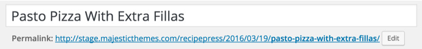
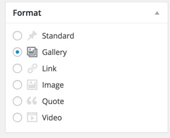
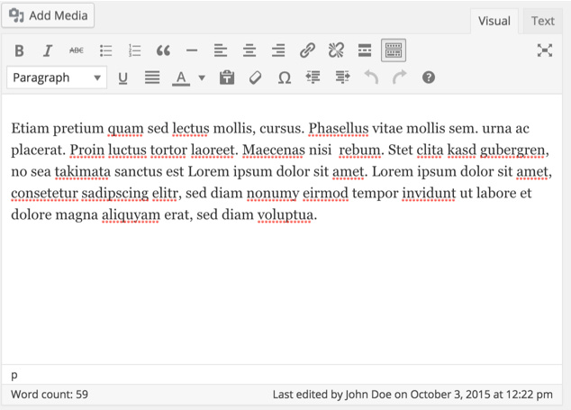
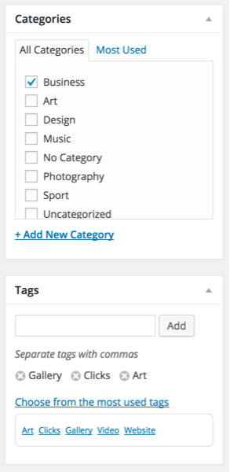
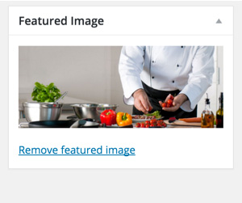

Adding News Post
Go to WordPress Admin > Posts > Add New
1 - Provide the post title

2 - Select the related post format

Post Formats and Related Meta Boxes:
This theme supports various post formats. So, when you select a post format look out for related meta boxes that will appear after your selection. You need to fill out those meta boxes with related information, so that your post can appear in best possible design.
3 - Write post contents

4 - Add or select related category and tags

5 - Provide featured image. Recommended size of featured image is width of around 848px and height of 342px. Height is more flexible but you have to put all images with same height.
Images bigger than minimum required size will be cropped automatically.

6 - Publish the post once you are done.